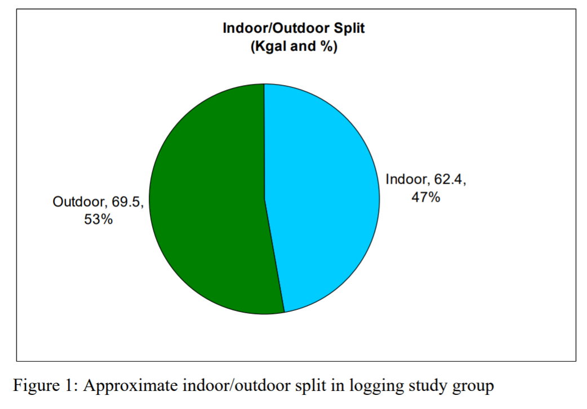
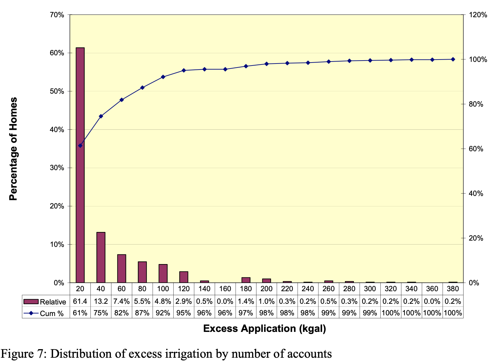
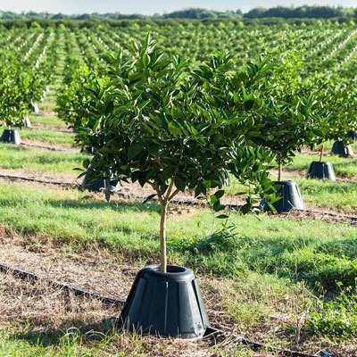
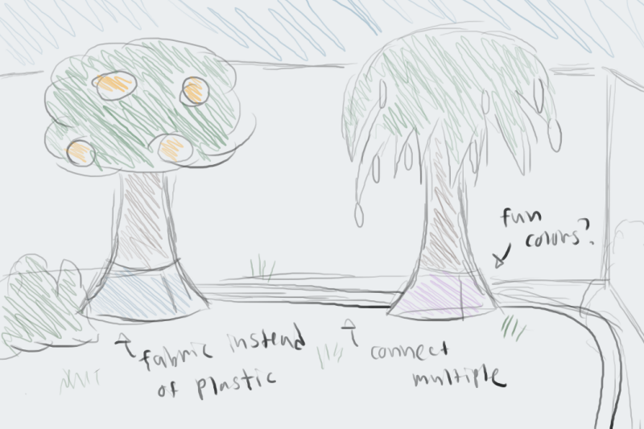
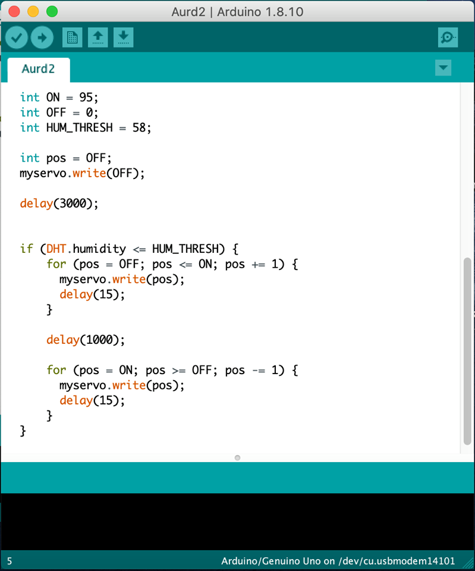
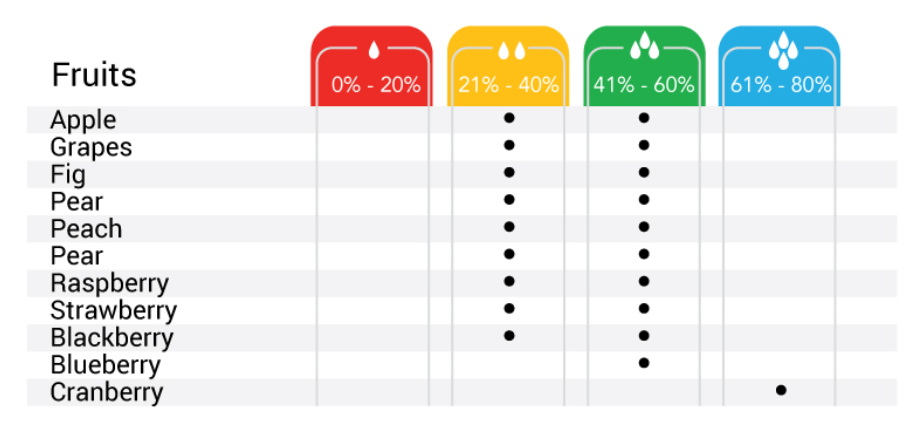
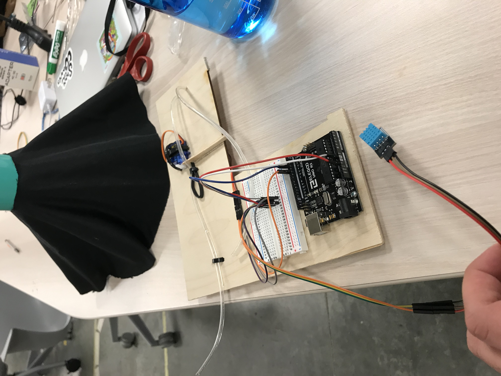
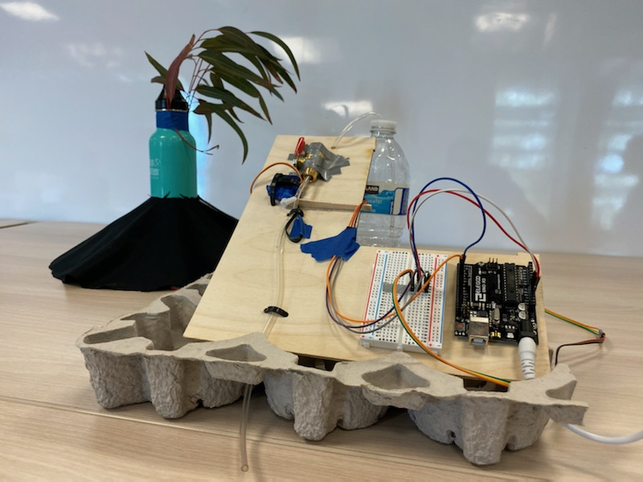
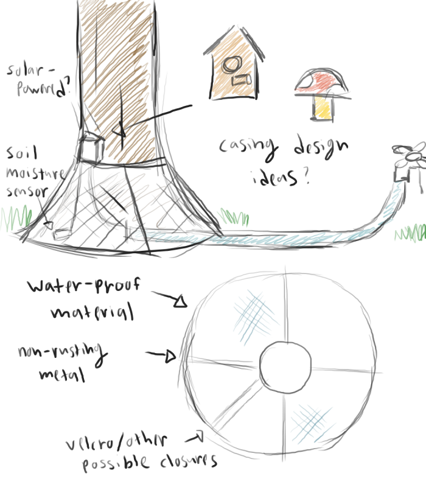

Hardware · Arduino · Sustainability
A smart irrigation device that uses humidity sensing to eliminate over-watering. First place winner at the UCSD Sustain-A-Thon, judged by San Diego Water Authority members and UC San Diego professors.
Overview
The Tree Skirt is a cone-shaped device that wraps around the base of a plant to trap evaporation and control water flow automatically based on the humidity inside. By limiting evaporation and only watering when needed, it dramatically reduces household outdoor water usage.
Built in three days during a sustainability engineering competition at UC San Diego with two teammates.
The Problem
Data Point 1
The average California family uses about 190 gallons of water outdoors per household per day — the vast majority on landscaping and irrigation.
Source: California Single Family Water Use Efficiency Study


Data Point 2
The average excess irrigation use for single-family accounts is estimated at 26.2 kgal per year — water that could be saved with smarter technology.
Source: EPA WaterSense
The Challenge
The price of water is projected to increase exponentially as climate change intensifies. The question driving our project: How can we preserve water usage at the household level with low-cost, accessible technology?
Concept & Design
Inspiration
An existing agricultural product — the Tree T-PEE — is a plastic cone placed over tree roots to trap evaporation and reduce water loss. Research suggests it can significantly lower water consumption in commercial irrigation. We wanted to bring this concept to everyday home use.


Our Idea
We reimagined the Tree T-PEE for residential use: add automatic watering controlled by a humidity sensor to prevent over-watering, and design it to be attractive enough to sit in a home garden without being an eyesore.
Engineering & Construction
Logic
The device's code runs a simple conditional: if the humidity inside the skirt drops below a set threshold, the water valve opens; otherwise, it stays closed. This prevents over-watering entirely.


Features
The device is designed so humidity thresholds can be customized per plant type. A user would select their plant species and the Tree Skirt would handle the rest — no knowledge of irrigation required.
Hardware Assembly
Using components sourced during the three-day competition, we assembled a working prototype capable of stopping water flow on command. For our judges' demonstration, we blew air under the skirt to raise the humidity and showed the device cutting off water flow in real time.


Final Prototype
The final Tree Skirt successfully stopped water flow when humidity rose inside the cone, proving our concept. We presented to a judging panel that included San Diego Water Authority members and UCSD professors — and took first place in the competition.
Looking Forward

Ideas for the future of the Tree Skirt
Areas of Improvement
Moving forward, we would map specific humidity targets to different plant and tree species, making setup as simple as selecting your plant from a list. We would also offer multiple size variants to cover shrubs and bushes, and invest in a more polished appearance suitable for residential gardens.